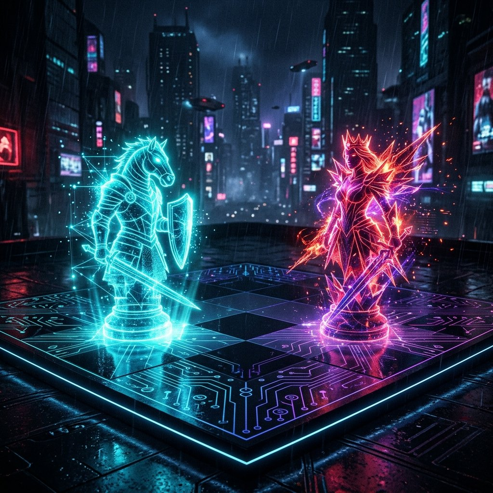

AI Meets Cybersecurity

When I was younger, my fascination with technology often felt like stepping into the world of science fiction. I vividly remember playing games like Watch Dogs, imagining what it would be like to live in an interconnected city where every device, every system, was part of a greater web. It was exhilarating—and a little terrifying. Movies like Her and Terminator fueled my curiosity further, showing me both the beauty and the dangers of artificial intelligence.
Years later, when I started my career in cybersecurity, that fascination became more than just daydreams. AI wasn’t just the subject of futuristic games or Hollywood blockbusters anymore; it was being hailed as the next big revolution in the workforce. I still remember someone telling me, almost as a warning, “AI will be the future of jobs. You either get ahead of it, or it buries you.” That sentence stuck with me, and it shaped the way I approached my career from that moment forward.
Exploring AI in Cybersecurity
It didn’t take long for me to see how AI was starting to reshape the field of cybersecurity. My first dive into AI research wasn’t out of sheer curiosity—it was out of necessity. Cybersecurity was (and still is) my career, so I wanted to understand how AI could transform it.
What I found was both exciting and sobering. On one hand, AI was helping organizations stay ahead of threats in ways we’d never seen before. It could analyze massive amounts of data in real time, spot anomalies, and automate responses to attacks—all at speeds no human could match. But on the other hand, AI was also being weaponized. I saw how attackers were using it to automate the creation of malware, design sophisticated phishing schemes, and even predict the defenses they might encounter.
It was a double-edged sword. AI was making both attackers and defenders smarter, faster, and more dangerous.
The Power of AI: A Double-Edged Sword
One of the most striking things I’ve learned is how AI doesn’t pick sides. It’s a tool—a powerful one—and how it’s used depends entirely on who wields it.
- Attackers leverage AI to: Automate the creation of malware, accelerate reconnaissance, and identify vulnerabilities with surgical precision.
- Defenders leverage AI to: Spot anomalies in network traffic, expedite vulnerability detection, and automate responses to potential threats.
This constant battle between attackers and defenders, fueled by AI, has made the cybersecurity landscape more dynamic than ever. It’s like a high-stakes game of chess, where both sides are constantly adapting and learning from one another.
My Journey with AI in Cybersecurity
Working in cybersecurity has given me a front-row seat to this evolution. I’ve seen AI used to automate workflows that once took days, helping teams identify vulnerabilities faster and respond to incidents more effectively. At the same time, I’ve watched how attackers have embraced AI, creating tools that bypass traditional defenses with alarming speed.
There’s a strange irony to it all. AI has made both sides of the equation better. It’s raised the stakes, forcing defenders to innovate and adapt just as quickly as attackers do.
For me, this isn’t just a professional challenge—it’s a personal one. Every time I see AI being used for harm, I’m reminded why I chose this field in the first place. It’s not just about protecting systems or data; it’s about staying ahead of the curve and ensuring that the tools we create are used for good.
Looking Ahead
As I reflect on my journey, I can’t help but feel both excitement and responsibility. AI is here to stay, and its role in cybersecurity will only grow. The tools and strategies we develop today will shape the future of this field, for better or worse.
What I’ve learned is that the key isn’t just in building smarter AI—it’s in building smarter humans who can collaborate with AI effectively. It’s about understanding that AI isn’t a replacement for human ingenuity; it’s a partner, a force multiplier that can help us tackle challenges we couldn’t face alone.
Cybersecurity has always been about staying one step ahead of the threat. With AI, that step has become a leap—and I’m here for the journey.